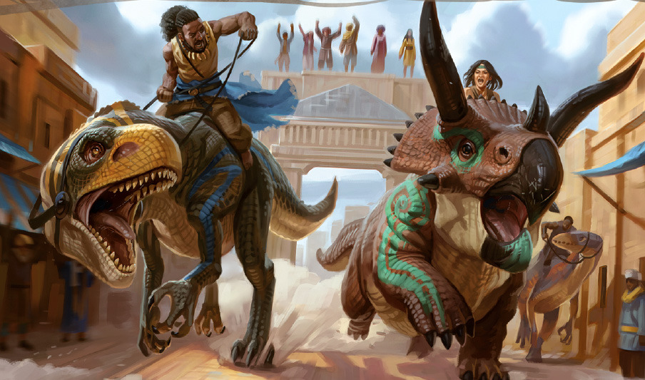

Après avoir repoussé une attaque de mort-vivant dans le quartier populaire de la Gorge de Malard, la Compagnie Oignon s'est séparée : Targ et Kruks se dirigeant vers le Trône doré, afin d'obtenir une audience avec le Prince Marchand Jobal, alors que Daeron et Ellcrys restant à l'auberge.
Dans les petites rues encombrées de Port Nayanzaru, Kruks et Targ se frayent un chemin parmi les vendeurs ambulant, la foule assemblée aux terrasses des auberges sirotant du Tej frais, les échoppes d'épices étranges et d'étoffes colorées, les dinosaures chargés de marchandises, le tout sous un soleil éclatant. Alors qu'ils progressent dans un passage étroit, sur un balcon, une imposante caisse de bois se précipite vers le sol. Kruks réussi à l'éviter mais Targ est touché de plein fouet et s'écroule au sol, sonné par l'impact. Un accident ? Non, une silhouette capée s'éclipse dans les ombres. Sans attendre un instant, Kruks et Targ se lancent à sa poursuite. Réussissant à rattraper l'agresseur, cette silhouette s'avère être une pur-sang Yuan-ti, une race d'homme serpents, adorateurs de dieux maléfiques. Avant de croquer un poison fatal, la Yuan-ti expire dans un dernier souffle : "Pour Ras Nsi..."
Arrivant enfin au Trône doré, Targ et Kruks rencontrent la Princesse Marchande Kwayothé. Cette dernière, une jeune et belle chulteénne, a le monopole du Tej, des parfums, fruits et huiles et propose à la Compagnie Oignon de la représenter à la course de dinosaure qui aura lieu le lendemain.
De retour à l'auberge, la Compagnie réunie, rencontre Volothamp Geddarm, auteur célèbre et prolifique, explorateur, botaniste, sociologue en pleine séance de dédicace de son dernier ouvrage "Le guide des monstres de Volo - édition révisée". La Compagnie acquiert un exemplaire, après d'âpres négociations.
Le lendemain, la Compagnie décide de représenter Kwayothé à la course dinosaure "toutes catégories". Kruks enfourche un jeune triceratops pendant qu'Ellcrys se décide pour un fougueux allosaure.
Après une course endiablée, et non sans l'aide précieuse de Targ positionné à un endroit stratégique du parcours, Ellcrys franchit la ligne d'arrivée en première position et est couronné vainqueur.

Durant la célébration, la Compagnie a l'occasion de rencontrer le Prince Marchand Jobal, responsable des guides et des mercenaires de la ville, ainsi que d'introduire Gundren dans les milieux huppés de Port Nayanzaru.
De retour aux réalités de leur mission sur l'île, la Compagnie choisit de confier son destin à Eku, un des guides proposant ses services pour guider des aventuriers dans les jungles périlleuses de Chult.

Eku est une chultéenne d'environ 40 ans, vivant dans une maison de bois dans un quartier pauvre de la ville. Elle conseille à la Compagnie de se procurer une autorisation d'explorer auprès de la milice des Poings enflammés, compagnie de mercenaire de Baldur's Gate qui s'est arrogé la souveraineté de l'île et des ressources qui s'y trouvent. En plus de l'autorisation, Eku conseille de se procurer des canoës, du repoussant à insecte, des provisions et des capteurs d'eau de pluie. Elle pourra les guider vers le Gardien Naga, un oracle puissant, parfait pour ceux qui ne savent pas encore ce qu'ils recherchent...
Si la Compagnie Oignon est prête, elle les attendra le lendemain à l'aube à la porte Ouest de la ville...